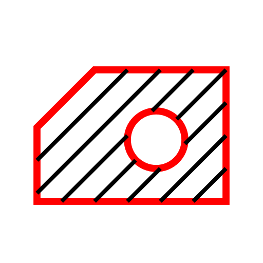
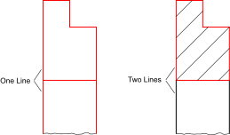

Hatch from Selection
Werkzeugleiste / Symbol:


Menü: Zeichnen > Hatch > Hatch from Selection
Tastenkürzel: H, A
Kommandos: hatch | ha
Beschreibung:
Dieses Werkzeug füllt eine Fläche, die vollständig von bestehenden Objekten
eingeschlossen ist mit einem Schraffurmuster oder einer Farbe.
Vorgehensweise:
- Bereiten Sie die Objekte, welche die Fläche einschliessen so vor, dass
sie eine vollständig geschlossene Kontur bilden. Die Kontur muss so
geschlossen sein, dass ein Objekt ans andere anschliesst wie in der rechten
Darstellung gezeigt:

- Selektieren Sie die Kontur(en), die Sie schraffieren oder füllen wollen.
Beachten Sie, dass Inseln innerhalb von Konturen ebenfalls selektiert werden
müssen, damit sie nicht durchgehend schraffiert oder gefüllt werden:

- Starten Sie diese Werkzeug.
- Ein Dialog mit den Schraffur-Optionen wird angezeigt.
Wählen Sie ein Schraffurmuster, Skalierungsfaktor und Rotationswinkel für das
Muster. Wenn Sie stattdessen eine Farbfüllung verwenden wollen, aktivieren
Sie die Feld "Solide Füllung".
- Klicken Sie "OK" um die Schraffur zu erstellen. Je nach Komplexität der
Kontur und Skalierfaktor des Musters kann es eine Weile dauern um die
Schraffur zu erstellen.